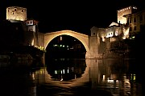
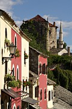
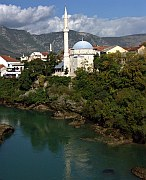
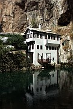
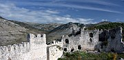
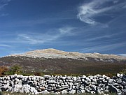
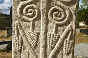

Disclaimer: These pages are not actively maintained, and some of the practical information on the site is out of date. I am working on a new version of the site that will focus more on my photos and memories of travel in Southeast Europe, and less on practical details that too easily become obsolete. In the meantime, please treat the information here with caution.
Stari Most, Mostar

Stari Most at night

Kujundžiluk, Mostar

Neretva River, Mostar

Tekke, Blagaj

Stepjan Grad, Blagaj

Podveležje

Radimlja Necropolis
Mostar and Surroundings
Mostar is the largest town in the Herzegovina region. Its bridge, old town, and dramatic situation above the Neretva River make it a popular spot for tourists, many of whom arrive on daytrips from the Croatian coast. The contrast between the familiar features of mass tourism and the highly visible war damage gives the town a slightly odd atmosphere. It's well worth staying overnight to enjoy the more tranquil evening atmosphere; a longer stay would allow time to visit some nearby attractions in Herzegovina.
The Bridge and the City
Mostar's main attraction is the reconstructed Old Bridge, Stari Most. The original bridge was one of the most impressive legacies of Ottoman architecture in the Balkans. Destroyed by shelling in 1991, it was rebuilt and reopened in 2004, and is apparently still referred to as the "Old" Bridge. Perhaps too many words have already been written about the bridge, both as a beautiful structure and as a metaphor for reconciliation. Rather than adding even more words I will simply confirm that it is just as impressive as everyone says, and suggest that you view it at night, when the newness of the stonework is less obvious, and the illuminated arch forms a circle with its watery reflection.
The Neretva River changes colour with the weather but is usually a striking shade of green, like so many rivers in the Dinaric Alps. You are likely to see people fishing in it; you may even see young men diving into it from the bridge. When I visited I often saw boys who appeared to be just about to dive, but somehow they never quite got around to it. Given that just standing on the parapet in swimming trunks seemed to be enough to attract the attention of the girls crossing the bridge, I can't say I blamed them.
The small Old Town surrounds the bridge. There are just a few streets on the western side of the river - look out for the little Crooked Bridge (Kriva Ćuprija) spanning a tributary of the Neretva (another reconstruction, apparently not as faithful as that of Stari Most). East of the river is Kujundžiluk, an attractively restored cobbled street. On summer days the street buzzes with the multilingual chatter of tourists browsing in the souvenir shops; by night it can be eerily quiet. Cafes and restaurants perched high above the water on both sides of the river offer the chance to enjoy a leisurely meal with wonderful views.
North of Kujundžiluk the lovely Koski Mehmed Pash Mosque and Karadžozbeg Mosque have recently been restored and are now open to visitors. If you get the chance to climb the minaret of either mosque you'll be rewarded for your exertions with fine views of the town. Between these two mosques an old Turkish House is open to visitors - the interior decoration is attractive, but upstaged by the views of the river framed in the windows. You may be prevailed upon to have your photo taken in "Turkish" fez and waistcoat, a tradition that goes back at least to the 1960s. Despite the cheesy aspects the house is worth visiting - there are many Ottoman-style houses in the Balkans but few in such a stunning location.
Although much of the old town has been rebuilt, it's impossible to visit Mostar and not be aware of the destruction caused by the war in the 1990s. It is much more obvious here than in Sarajevo and is only gradually being repaired. The former front line runs along a main boulevard through West Mostar, parallel to the river. Many of the buildings on this street are completely ruined or pockmarked from the effects of heavy shelling. Further west again is a modern part of the city, with pleasant but unremarkable tree-lined streets. The Cathedral and the very obvious white cross on a hill are not exactly among the finer achievements in the history of Catholic art. There is also a large Partisan memorial in this part of town. I suspect that it was fairly ugly when it was properly maintained, but now that it has been abandoned to the overgrowing grass it has a certain poignancy.
Around Mostar
The village of Blagaj, 15km south of Mostar, makes for an easy and enjoyable half-day excursion. The main attraction is the source of the River Buna, in a a large cavern at the bottom of a cliff. Thousands of birds dart to and fro across the mouth of the cave. Right beside the source a tekke (Dervish monastery) is open to visitors. This is a popular spot for locals and there are several restaurants and cafes along the river. If you are feeling energetic I recommend walking to Stepjan Grad, the castle overlooking the village. The easiest approach is from a track that goes around the back of the hill (i.e. the opposite side from Blagaj). Although the castle is in ruins its walls are still impressive, and seem almost like a natural part of the landscape. There are great views of the harsh, intimidating countryside of Herzegovina.
Podveležje is a plateau to the south-east of Mostar, dominated by Velež Mountain. The road from Mostar passes high above the castle at Blagaj. There is nothing specific to see, but it's a peaceful place and the distinctive landscape is interesting. Carefully built stone walls enclose fields that themselves seem to be nothing but stone - I was reminded of parts of the West of Ireland. At times it seems that goats are the only life forms on the plateau, but when a bus appears people materialise out of nowhere.
Further south, the small town of Stolac is overlooked by a ruined hilltop castle, like so many Bosnian towns. It has an appealing location strung out along a river and shaded by lush greenery - a welcome break from the stark, rocky fields of Herzegovina. Stolac was badly damaged during the war and the scars are still all too evident. The main reason to come here is to see the Radimlja necropolis. Strewn over a plain just outside the town are more than a hundred mediaeval tombstones known as stećci (singular stećak). Stećci are characteristic of Bosnia and some regions in neighbouring countries, and Radimlja is the largest collection in a single location. They are carved with a variety of decorative motifs, some of which remain mysterious; the most famous is a man with an oversized raised right hand. Sadly the nearby junkyards and the traffic on the main road bisecting the site take away from the atmosphere, and there is no information to help you understand what you are looking at. Even so it's a worthwhile excursion for anyone interested in Bosnia's cultural history.
The Catholic pilgrimage centre of Međjugorje is another possible day trip - in fact it draws more foreign visitors to Herzegovina than anywhere else. Casual tourists (as distinct from pilgrims) may not find much to interest them. The Kravice Waterfalls near the Croatian border are also popular.
Practicalities
You are unlikely to make much use of public transport within Mostar itself, as most points of interest are within walking distance. The train station and the main bus station are locatd side by side a short walk north of the centre; some buses arrive at a different station west of the town so make sure you know where you are before you start walking! Mostar is well connected to nearby towns and villages by local "MostarBus" routes, many of them starting opposite the station. Blagaj (30 minutes) and Podveležje (1 hour) are both covered by these routes. The local buses are painted bright yellow with Japanese flags - you can see them miles away across the rocky countryside.
Međjugorje and Stolac are also easy to reach by bus. The latter has services from both Mostar and Čaplina - either way you can ask to be dropped off at the Radimlja graveyard just before reaching the village. Kravice waterfall is difficult to reach by public transport, but in summer you should be able to join an organised excursion from Mostar.
Local bus services around Herzegovina are greatly reduced at weekends, so if you are using Mostar as a base for public transport, try to be there during the week.
Two trains daily run from Mostar to Sarajevo and to Ploče on the Croatian coast. The trip to Sarajevo is an especially scenic ride. Many people find that buses are more convenient for travelling to or from Croatia - the train schedule is not particularly traveller-friendly and Ploče itself has nothing to see. If you do decide to take the train, all buses on the main coast road between Split and Dubrovnik call at Ploče. There are also at least two daily direct buses to Dubrovnik and to Split (more in summer).
Accommodation in Mostar shouldn't be a problem, there is a wide and apparently ever-increasing selection of hotels, guesthouses (pansioni), and private rooms.
What they said about Mostar ...
It is one of the most beautiful bridges in the world. A slender arch lies between two round towers, its parapet bent in a shallow angle in the centre. To look at it is good; to stand on it is as good. Over the grey-green river swoop hundreds of swallows, and on the banks mosques and white houses stand among glades of trees and bushes.
- Rebecca West, Black Lamb and Grey Falcon, 1941
It is an enchanted gesture of human defiance, a splendour of gold and white in a desert of skeletal stone, grouped about the emerald Neretva.
- J.A. Cuddon, The Companion Guide to Jugoslavia, 1968
I walked past tourist agencies, hotels, restaurants, obstacle courses made of postcard stands; finally the river appeared on the right, and the two bridge towers, and between them the famous bridge. Its beauty alone kept Mostar going, and I found it somewhat amazing to contemplate that all I had passed through, the shops and hotels and restaurants employing thousands of people, existed because of this one arch of stone.
- Brian Hall, The Impossible Country, 1994
More photos of Mostar and Blagaj in my Bosnia and Herzegovina Galleries